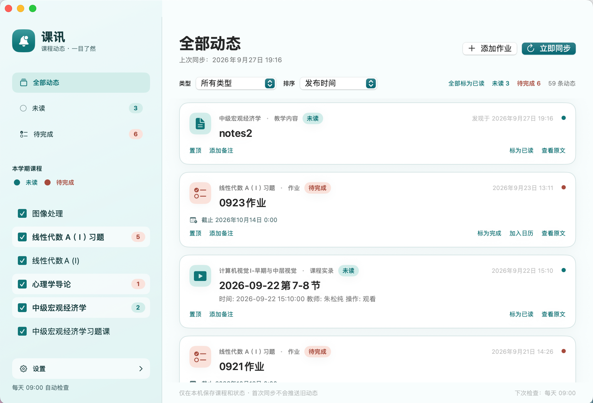

One timeline
Browse new course activity by time, type, and course. Unread items and unfinished assignments remain easy to spot.
Open-source macOS app
课讯
A calmer way to keep up with PKU courses. CourseWatch checks for new announcements, assignments, recordings, and grades, plus updates to course materials and syllabi, then brings them into one timeline.

What it does
Browse new course activity by time, type, and course. Unread items and unfinished assignments remain easy to spot.
Track assignments, add your own tasks, and send due dates to Apple Calendar with advance reminders.
Check PKU Course, with optional syncing for PKU Class and configured Gradescope courses. Add notes and pin important updates.